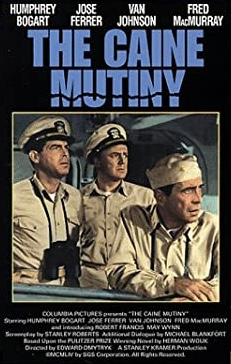

The Caine Mutiny
27th Academy Awards
(Oscars 1955)
7 Nominations, 0 Awards
| Nominations | ||
|---|---|---|
| Category | Nominees | Result |
| Best Motion Picture | Stanley Kramer | Nominated |
| Actor | Humphrey Bogart | Nominated |
| Actor in a Supporting Role | Tom Tully | Nominated |
| Writing (Screenplay) | Stanley Roberts | Nominated |
| Film Editing | Henry Batista and William A. Lyon | Nominated |
| Sound Recording | John P. Livadary | Nominated |
| Music (Music Score of a Dramatic or Comedy Picture) | Max Steiner | Nominated |